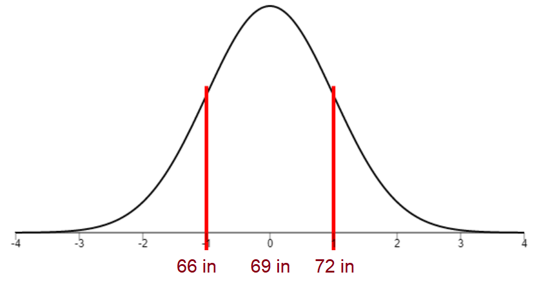
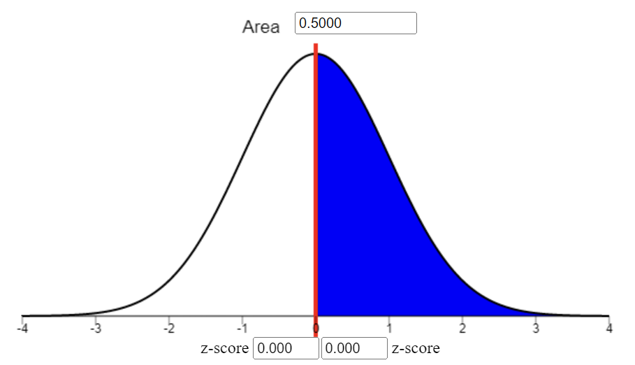
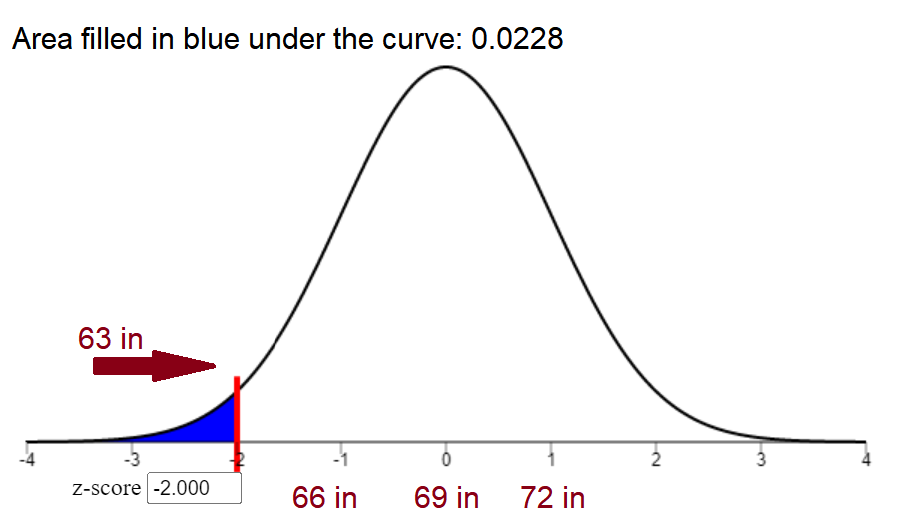
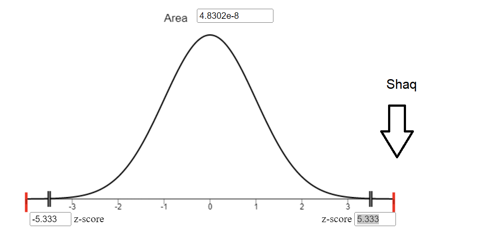
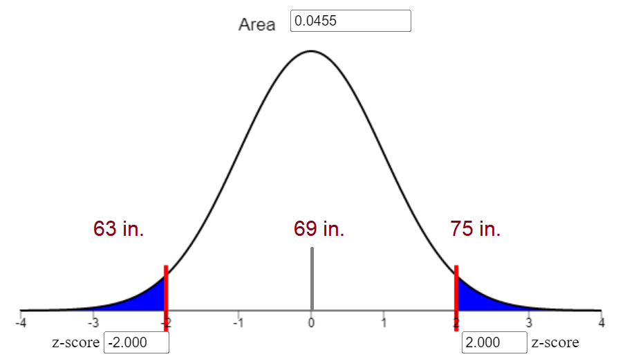

Meet Levi. He is a short person. He is around 5’3” (63 inches). While we can tell he is short, we may wonder how short he is. In order to know this we need something to compare his height to.
American Sample
The code below allows us to create a hypothetical (but reasonable) data set of American male heights. I will be creating a sheet of 200 random American men. Below are a few entries…
Code
import pandas as pdimport numpy as npimport requestsimport matplotlib.pyplot as plt###def create_random_people_dataframe(n):# Create a Pandas data frame with a single column for heights df = pd.DataFrame({'height': np.random.normal(loc=69, scale=3, size=n)})# Round the heights to the nearest integer df['height'] = df['height'].round(2)# Add an 'id' column to the data frame df['id'] = df.index +1# Send a request to the API and retrieve the names response = requests.get("https://randommer.io/api/Name", headers={"X-Api-Key":api_key}, params={"nameType": "surname","quantity": n} )# Parse the response from the API to extract the names names = response.json()# Add names to the data frame df = df.assign(name=names)# Rearrange the columns df = df.reindex(columns=["id", "name", "height"])# Return the data framereturn df# Generate a data frame with random people's heightsdf = create_random_people_dataframe(200)df.drop(columns=['id']).head()
name
height
0
Krull
72.38
1
Cardoza
69.89
2
Oyler
68.25
3
South
66.28
4
Eads
65.55
Quantifying Extremes!
A standard score, also known as a z-score, is a way of comparing a single data point to a group of data points. It helps us understand how high or low a number is relative to the group. The z-score measures how many standard deviations away a point is from the group average. (For a review, see here)
The average height and standard deviation for the generated American men is calculated below
mean_height = df["height"].mean().round()st_dev_height = df["height"].std().round()n_height = df["height"].count()print("Average height is: "+str(mean_height))print("Standard deviation of height is: "+str(st_dev_height))print("Number of people in sample is: "+str(n_height))
Average height is: 70.0
Standard deviation of height is: 3.0
Number of people in sample is: 200
The formula for z-score is as so:
\[
z = \frac{x-\mu}{\sigma}
\]
As the z-score increases/decreases, the father away it gets from the mean. For example, Shaq is 85 inches tall. His z-score would be calculated as so:
z_score_shaq = (85- mean_height)/st_dev_heightprint("Shaq's height is "+str(z_score_shaq.round(2))+" standard deviations from the mean")
Shaq's height is 5.0 standard deviations from the mean
This also means that the smaller the z-score is, the closer it is to the mean. Take an average height person:
This shows that Levi is a couple standard deviations lower than average. Pretty short!
Area means probability
The graph below shows the normal distribution of American men with labeled heights for a standard deviation above and below average height (assuming average is 69 inches and standard deviation is 3 inches)

If you met a random American, the odds that they are taller than average is 50 percent. (the odds that they are shorter than average is 50 percent) We can see that illustrated below. If the area under the whole curve is equal to 1, that means that half the area is equal to .5.

We can also imagine Levi compared to the American male population. The red line marks where Levi’s height is and the blue fill is for any person as short as Levi or shorter. This means that the probability of meeting someone as short or shorter than Levi in the American population is 2.28 percent.

Shaq is unbelievably tall. Like you will probably not meet anyone as tall (or taller) than him. On the graph below, the red line on the right represents the height of Shaq. The filled in the blue area is so small, you cannot even see it. The number on top tells us that the odds of finding an American man as tall (or taller) than Shaq is 0.000004862 percent. (very unlikely!)

A whole bunch of guys
What we did above is calculate a z-score for a single piece of data given a normal distribution. The formula is seen below. The curve represents the possible heights that the individual could be.
\[
z = \frac{x-\mu}{\sigma}
\]
What if instead of using a single data point, we use a group of data points to compare? The reason for doing a single data point would to see how uncommon a data point would be given a distribution- this means that the reason for doing a group of points would be to see how uncommon a group would be given a distribution.
Assume we have a group of people from Attack on Titan.
\(\bar{x}\) would represent the average of the Attack on Titan group.
\(\mu\) would represent the mean of American men
\(\sigma\) would represent the standard deviation of American men
\(n\) would represent the number of people in the Attack on Titan group
\[
z = \frac{\bar{x}-\mu}{\left(\frac{\sigma}{\sqrt{n}}\right)}
\]
A cool mathematical trick has just been done. Looking at one person compared to a population can tell us the probability that he came from the population. More interestingly, looking at a group compared to the population can tell us the probability that the group came from the population.
For the comparison with the individual, we need
Find the height of the individual.
Find the distribution of heights from the population (the curve represents potential/possible heights that the person could be)
Use the height to produce a z-score for the individual. (calculated with the formula above)
Wherever the z-score is, find the area of the tail of the distribution. The area shaded under the curve would represent the probability of finding someone that tall/short or taller/shorter.
Similarly, For the comparison with the group, we need
Find the height average of the group.
Find the distribution of heights from the population (the curve represents potential/possible height averages that the person could be)
Use the height to produce a z-score (test-statistic) for the group. (calculated with the formula above)
Wherever the z-score is, find the area of the tail of the distribution. The area shaded under the curve would represent the probability of finding a group that tall/short or taller/shorter.
Below, we find the test statistic (z-score) of the Attack on Titan group.
df_aot = pd.DataFrame( {'name': ['Eren', 'Armin', 'Levi','Connie','Marco'],'height': [67, 64, 65, 62, 70]})zscore_aot = (df_aot["height"].mean() - mean_height)/(st_dev_height/np.sqrt(df_aot["height"].count()))print("The average height for the Attack on Titan group is "+str(df_aot["height"].mean()))print("The test-statistic/z-score for the Attack on Titan group is "+str(zscore_aot.round(2)))
The average height for the Attack on Titan group is 65.6
The test-statistic/z-score for the Attack on Titan group is -3.28
import scipy.stats#Code to find area under curve on left-sidepval = (scipy.stats.norm.sf(abs(-2.53)))*100print("The probability of finding American men as short (or shorter) than S1 Attack on Titan characters (assuming American men are truly 69 inches tall with a standard deviation of 3 inches) would be "+str(pval.round(2)) +"%")
The probability of finding American men as short (or shorter) than S1 Attack on Titan characters (assuming American men are truly 69 inches tall with a standard deviation of 3 inches) would be 0.57%
Note: We just generated a distribution from theoretical possible sample means. This is possible due to the Central Limit Theorem- see here and here for some good explanations. Just for simple intuition, you are more likely to get a sample with a mean closer to the population mean than farther. (Also, notice how this assumes that the population standard deviation is known-it usually isn’t)
On the graph below, if the population mean is truly 69 inches, then finding samples with the means 66 and 72 would be equally likely.

Introducing the P-value
In null hypotheses significance testing, we set up two hypotheses, the null hypothesis, and the alternative hypothesis. The process to test a hypothesis is as so:
Assume the null hypothesis is true
Calculate what we would expect to see if the null hypothesis is true (output is a distribution of potential test statistics/sample means etc.)
Calculate what we actually observe (output is your sample’s test statistic)
Using the distribution of potential test statistics, find the probability of getting your sample’s test statistic
If you find that the probability of you getting a test statistic is low enough according to the generated distribution of test statistics from your null hypothesis, (usually below 5 percent) reject the null hypothesis- otherwise fail to reject it.
That’s it. The p-value is the probability of getting a sample as extreme or more extreme than any other result assuming your null hypothesis. As shown above, the two things you need to calculate the p-value are
the observed sample value (test statistic)
the distribution of theoretical sample values (test statistics) that could occur
Getting these two numbers depends on what type of test you are doing and what type of assumptions you are willing to make.
The cut-off
Now how improbably is improbable? For example, if a coin is fair and you throw it 100 times, we expect to roughly get as many heads as tails- but at what point are we going to say, “Hey this coin doesn’t seem fair?” If we get 40 heads and 60 tails, this is less likely than 50 heads and 50 tails, but we can reasonably see this happening just by chance. However, if we get 75 heads and 25 tails- this would be reallllly unlikely assuming the coin is fair.
By tradition, researchers have used the arbitrary “5 percent” cutoff point to determine what is “significant” or not. If the sample’s test statistic is so extreme that we would only expect the given sample to be that (or more) extreme less than 5 percent of the time, we deem it significant. `
Expected Data/The Distribution and Observed Data/The Test statistic
This article will not deeply go into the distributions that you may see how extreme your test statistic is, but understanding the general nature will be useful for grasping how the p-value works.
Z-distribution
The z-distribution, also called the normal distribution, assumes that you know the standard deviation of your population. When your sample increases, your sample’s standard deviation will approach the population standard deviation. If this is the case, sufficiently large samples may assume the population standard deviation is ‘known’.
t-distribution
Assuming the population standard deviation is not known, we may need to use the t-distribution.
The z-distribution has a set spread because we know the spread of the population. If we are unsure of the spread of the population, me may have to accept the possibility that seemingly rare events may just be results of a large spread. Now as our sample increases, we can be more sure of how the spread looks, but otherwise, we just make the distribution of test statistics wider (and therefore less sensitive to extreme findings).
What specifically determines the spread of the t-distribution is the degrees of freedom. (calculated using the sample) Since larger sample sizes approximate the spread of the data better than small ones, the distribution becomes narrower as a result of these large sample sizes.
F-distribution
Test statistics and distributions of test statistics come in all varieties. The F-statistic is usually used to measure if groups of variables have some relation.
Analysis of Variance (ANOVA) uses an F-test to measure if group means are all equal. Assuming that they are all equal, a super abnormal F-statistic would mean that either they aren’t all equal or they are equal and your sample observations were just really unlikely
Linear Regression may use an F-test to measure if the model or any of its variables is related to the outcome. Assuming no relationship with the model or any of its variables, a super abnormal F-statistic would mean that either the model actually explains some of the model outcome, or its doesn’t and the sample observations were just really unlikely.
Similar to the t-distribution, the F-distribution will change given the degrees of freedom of the sample.
Chi-Squared (χ2) Distribution
This distribution is similar to F-tests since it measures relationships between groups, but it does so with counts/frequencies of categorical variables rather than values or any other measurements from quantitative variables.
Like the previous distributions, the chi-squared distribution will change given the degrees of freedom of the sample
Parametric and Non-Parametric tests
You can calculate a p-value from anything. All you need is the distribution of what you would find theoretically given your null hypothesis, and what you have actually found. Most of the tests above are parametric tests (all but the chi squared) and therefore have various assumptions- though there are more relaxed tests that may be appropriate for various situations. Some of these are as following:
Wilcoxon Signed Rank test (One sample/Paired Sample t-test but non-parametric)
Wilcoxon Rank Sum/Mann-Whitney U test (Two Sample t-test but non-parametric)
Kruskal-Wallis test (ANOVA but non-parametric)
The ultimate non-parametric test is the permutation test which makes a custom distribution of theoretical test statistics. This is only to show that the only thing one needs for a p-value is a theoretical sampling distribution of test statistics (under the null hypothesis) and the observed test statistic.
What the p-value is NOT
The p-value is NOT the likelihood that a result is due to chance
“When \(p\) is calculated, it is already assumed that \(H_0\) is true, so the probability that sampling error is the only explanation is already taken to be [100 percent]. It is thus illogical to view \(p\) as measuring the likelihood of sampling error. thus, \(p\) does not apply to a particular result as the probability that sampling error was the sole causal agent. there is no such thing as a statistical technique that determines the probability that various causal factors, including sampling error, acted on a particular result. instead, inference about causation is a rational exercise that considers results within the context of design, measurement, and analysis. Besides, virtually all sample results are affected by error of some type, including measurement error.”
The p-value is NOT the likelihood that a result is due to chance under the null hypothesis.
“That this is not the case is seen immediately from the P value’s definition, the probability of the observed data, plus more extreme data, under the null hypothesis. The result with the P value of exactly .05 (or any other value) is the most probable of all the other possible results included in the”tail area” that defines the P value. The probability of any individual result is actually quite small, and Fisher said he threw in the rest of the tail area “as an approximation.”
The p-value is NOT the likelihood that a Type 1 error has occurred
“[T]he p-value represents the probability of making a Type I error if the null hypothesis is perfectly true…
The p-value does not give you the probability that you have made a Type I error in reality. The phrase “if the null hypothesis were perfectly true” is the key to avoiding this misinterpretation. If H0 is not an absolutely perfect statistical model for reality (perhaps because of tiny differences between group means in the population, or just because the null is completely wrong), then the probability expressed in a p-value may not be accurate (Kirk, 1996). It is still a useful statistic, however, especially because it can help us make rational decisions about how well the null hypothesis matches the data in a study (Wasserstein & Lazar, 2016; Winch & Campbell, 1969).
The p-value is NOT the likelihood that\(H_0\)is true
“The \(p\) value does not say anything about the probability that the null hypothesis is true because the p-value is calculated under the scenario that the null hypothesis is perfectly true (Fidler, 2010). As a result, \(p\) cannot tell us whether the null hypothesis is true because we had to assume it was true in the first place to calculate \(p\) (Haller & Krauss, 2002). Likewise, a p-value cannot tell us whether the alternative hypothesis is true because \(p\) is based on the assumption that the null hypothesis is perfectly true.”
\(1 -\)p-value is NOT the likelihood that the result will be replicated
“p says very little about the replicability or stability of results (Schmidt, 1996). Indeed, p-values fluctuate wildly across studies (Cumming, 2008). It is true, though, that (generally speaking) low p-values indicate that the null hypothesis may possibly be easier to reject in the future (Cumming & Maillardet, 2006). However, this assumes that the replications are conducted under precisely the same conditions as the original study, with every possible relevant (and irrelevant) factor perfectly replicated. In real life, a low p-value does not necessarily mean that you will get similar results if you conducted the same study again. In fact, attempts to replicate studies with low p-values often do not succeed (Open Science Collaboration, 2015). If the sample size is small or if the sample is not representative of the population in some way (as occurs frequently with nonrandom samples), the results may be unstable and not replicable, even if p is very low and the null hypothesis is strongly rejected. The best way to determine whether the results of a study will replicate is to conduct a replication.”
The p-value is NOT an indicator of how important the findings are
The p-value says nothing about the importance of findings (Kieffer, Reese, & Thompson, 2001). Remember that importance is an issue of practical significance – not statistical significance. There is nothing magical about an α value less than .05. Decisions about policy, psychological interventions, and other practical implications of research should be based on more than just a p-value. Such important decisions should not be based on a statistic that is vulnerable to changes in sample size and study conditions (Wasserstein & Lazar, 2016).
The p-value is NOT an indicator about the size of an effect
“p-values indicate the size of an effect (e.g., the difference between means or the magnitude of the relationship between variables). For example, a researcher finding that p is greater than α (indicating that the null hypothesis should be retained) may decide that the results are”insignificant” or irrelevant. This confuses p-values with effect sizes. Effect sizes quantify the strength of mean group differences or variable relationships; p-values do not (Wasserstein & Lazar, 2016). If the sample size is small or the study has low statistical power, then there could be a large effect size that is worth discussing, even if p is too high to provide evidence to reject the null hypothesis… Understanding the strength of relationships or the magnitude of group differences is important – and that is why it is essential to calculate and report an effect size to accompany a null hypothesis statistical significance test (American Psychological Association, 2010; Wasserstein & Lazar, 2016).”